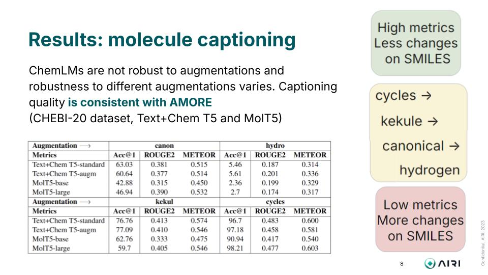

First image description.

Second image description.

Third image description.

The recent integration of chemistry with natural language processing (NLP) has advanced drug discovery. Molecule representation in language models (LMs) is crucial in enhancing chemical understanding. We propose \textbf{A}ugmented \textbf{Mo}lecular \textbf{Re}trieval (\heart AMORE), a flexible zero-shot framework that assesses trustworthiness of Chemical LMs of different natures: trained solely on molecules for chemical tasks and on a combined corpus of natural language texts and string-based structures. The framework relies on molecule augmentations that preserve an underlying chemical, such as kekulization and cycle replacements. We evaluate encoder-only and generative LMs by calculating a metric based on the similarity score between distributed representations of molecules and their augmentations. Our experiments on ChEBI-20 and QM9 benchmarks show that these models exhibit significantly lower scores than graph-based molecular models trained without language modeling objectives. Augmentation of SMILES representations leads to decreased performance on chemical property prediction tasks in the MoleculeNet benchmark. Additionally, our results on the molecule captioning task for cross-domain models, MolT5 and Text+Chem T5, demonstrate that our representation-based evaluation metrics significantly correlate with the classical text generation metrics like ROUGE and METEOR.
@inproceedings{ganeeva-etal-2024-lost,
title = "Lost in Translation: Chemical Language Models and the Misunderstanding of Molecule Structures",
author = "Ganeeva, Veronika and
Sakhovskiy, Andrey and
Khrabrov, Kuzma and
Savchenko, Andrey and
Kadurin, Artur and
Tutubalina, Elena",
booktitle = "Findings of the Association for Computational Linguistics: EMNLP 2024",
month = nov,
year = "2024",
address = "Miami, Florida, USA",
publisher = "Association for Computational Linguistics",
url = "https://aclanthology.org/2024.findings-emnlp.760",
pages = "12994--13013",
}